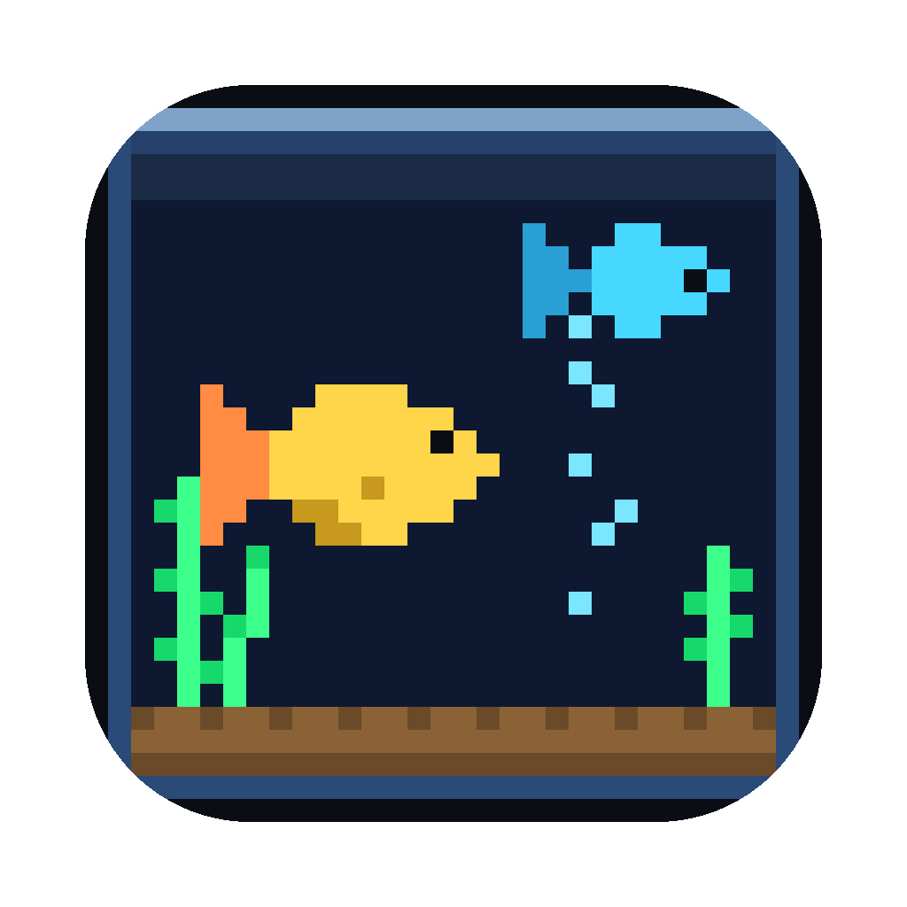
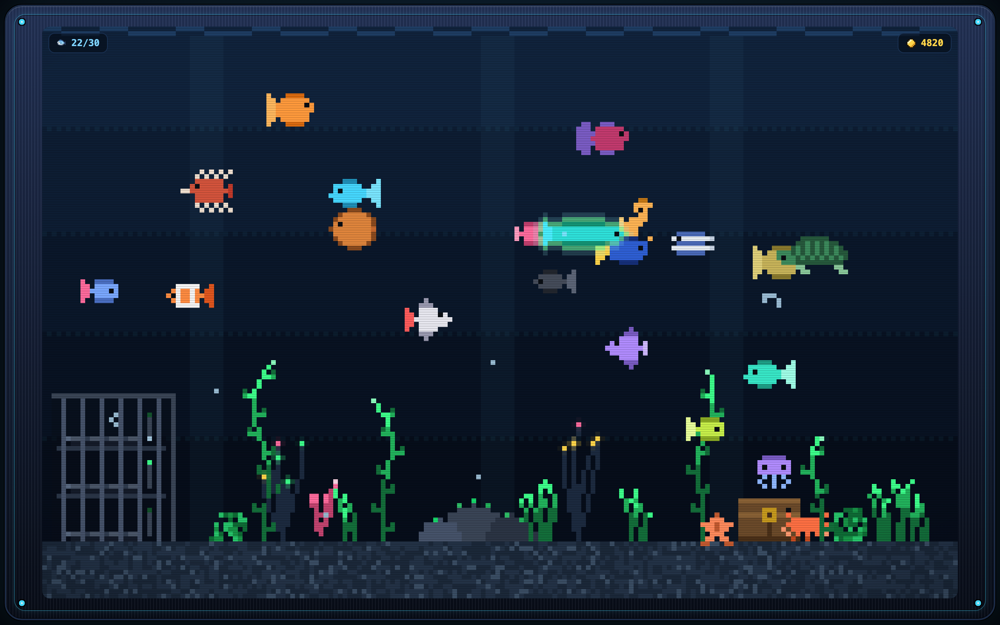

메뉴바에 사는 작은 사이버 어항
A tiny pixel aquarium that lives in your menu bar

레트로 브라운관 느낌의 유리 어항 속에서 픽셀 물고기들이 유유히 헤엄칩니다. 메뉴바의 🐟 아이콘을 누르면 열리고, 다른 곳을 클릭하면 조용히 닫힙니다. 물고기 57종을 모으고, 먹이를 주고, 이름을 지어주세요.
Pixel fish drift through a retro CRT-glass tank. Click the 🐟 icon in the menu bar to open it, click away and it quietly closes. Collect 57 species, feed them, name them.
2026년 9월 7일 업데이트 · 아래 신규 기능은 최신 개발판 기준입니다.
새 앱 릴리스는 아직 배포하지 않았으며, 설치된 버전에는 해당 메뉴가 없을 수 있습니다.
Updated September 7, 2026. These additions describe the latest development build.
A new app release has not been published yet; your installed version may not include them.
🌿 관상 모드 / Peaceful mode — 설정에서 켜면 상어·레이드가 발생하지 않습니다. 진행 중인 위협은 보상·손실 없이 종료됩니다. 먹이·교배·부화·직접 판매는 유지됩니다.
Turn on Peaceful mode in Settings to stop sharks and raids. Active threats end without rewards or losses. Feeding, breeding, hatching and manual sales remain available.
🐟 내 물고기 / My Fish — 이름·종 검색과 변이·왕관 필터로 개체를 찾고, 정보 카드에서 판매 잠금을 설정하세요. 관상 모드와 판매 잠금은 재실행 후에도 유지됩니다.
Search by name or species, filter shiny or crowned fish, and lock individual fish against accidental sales. Peaceful mode and sale locks are saved between sessions.
💾 저장·복귀 개선 / Safer saves — 손상된 저장의 원본을 보존하고 오류를 표시합니다. 자리가 없는 보상 알은 부화를 기다리며, 중단된 방치 정산은 남은 작업을 이어갑니다.
Damaged saves are preserved and storage errors are shown. Reward eggs wait for space, and unfinished offline progress resumes after reopening.
열기 / Open — 메뉴바의 🐟 아이콘 클릭. Dock 아이콘 없이 실행되며, 우클릭 메뉴에서 별도 창으로 분리할 수 있습니다.
닫기 / Close — 팝오버 밖을 클릭해 닫습니다. 최신 개발판의 Esc는 입력창·카드·목록부터 닫고, 열린 패널이 없으면 팝오버를 닫습니다.
메뉴 / Menu — 🐟 아이콘 우클릭 → 창으로 분리 · 새로고침 · 언어 · 종료.
먹이 / Feed — 마우스를 움직이면 아래 도구 모음이 나타납니다. 먹이를 고르고 물을 클릭하세요.
키보드 / Keyboard — 최신 개발판에서는 Tab으로 메뉴·개체를 이동하고
Enter·Space로 선택합니다. 사료를 고른 뒤 어항에 포커스를 두고 누르면 중앙에 먹이를 줍니다.
In the development build, use Tab to move between controls and Enter or Space to select. Select feed, then focus the aquarium and press Enter or Space to feed its center. Escape closes the active panel first.
문제가 있거나 건의할 내용이 있으면 메일로 알려주세요. 보통 며칠 안에 답합니다.
Questions, bugs, or suggestions — send an email and I will usually reply within a few days.
메일에 macOS 버전과 앱 버전을 함께 적어주시면 도움이 됩니다.
앱을 실행했는데 창이 안 보여요.
처음에는 팝오버로 열립니다. 메뉴바에서 🐟 아이콘을 찾아 클릭하세요. 우클릭하면 창으로 분리할 수 있습니다.
Look for the fish icon in the menu bar. Right-click it to detach the aquarium into a window.
물고기가 사라졌어요.
일반 모드에서는 상어·레이드로 개체를 잃을 수 있습니다. 최신 개발판의 관상 모드는 이를 막으며,
판매 잠금은 직접 판매만 막습니다. 이미 잃은 개체를 되돌리는 기능은 아닙니다.
In normal mode, sharks and raids can take fish. Peaceful mode prevents these losses; a sale lock only prevents selling.
Neither restores fish already lost.
저장 오류 안내가 보여요.
저장 공간·접근 설정을 확인하고 어항을 열어두세요. 일반 저장 실패는 자동 재시도합니다.
원본 보호로 저장이 중지됐다면 문제 해결 후 앱을 다시 실행하세요. 문제 확인 전 앱 데이터나 복구 원본을 지우지 마세요.
Check storage space and access settings. Ordinary write failures retry automatically; protected saves require a restart
after the storage issue is resolved. Do not clear app data or recovery copies while investigating.
다른 기기로 자동 백업되나요?
아니요. 저장과 복구 사본은 같은 기기에만 있습니다. 클라우드 동기화나 기기 손실에 대한 백업은 아닙니다.
No. Saves and recovery copies stay on the same device; there is no cloud sync or backup against device loss.
인터넷 없이도 되나요?
네. 네트워크 통신을 전혀 하지 않습니다. Yes — the app makes no network requests at all.
데이터를 수집하지 않습니다. 계정도, 로그인도, 광고도, 분석 도구도 없습니다.
No data is collected. No accounts, no sign-in, no ads, no analytics.
개인정보 처리방침 전문 · Full privacy policy →